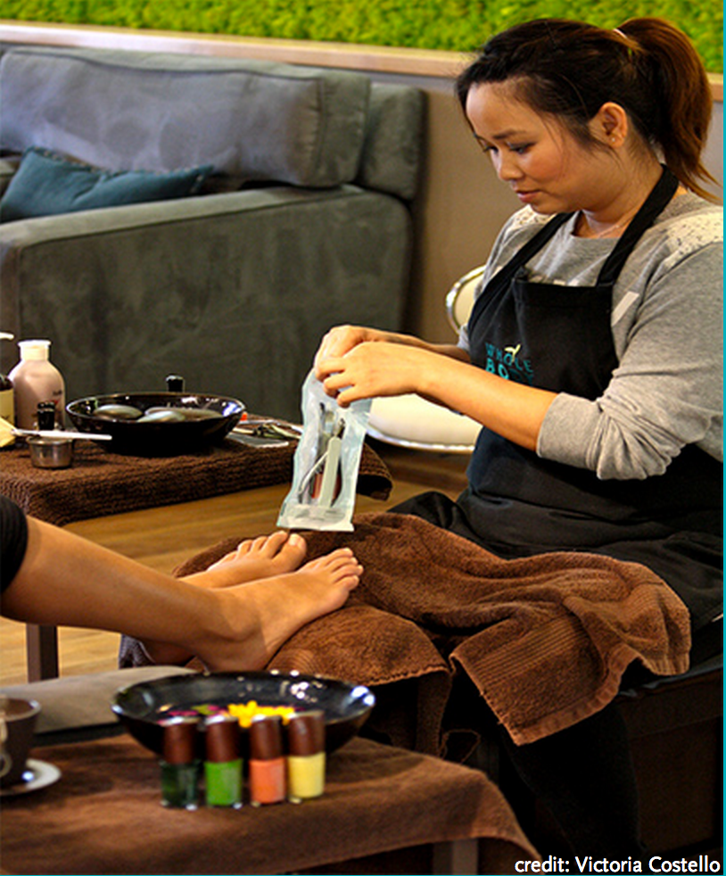

About Our Sanitation Standards
Whole Foods Market always goes aboce and beyond with our quality standards. The same goes for our disinfection practices!
California law states that each implement/foot bath must be sanitized with an E.P.A registered disinfectant after each client.
Our standards take it to the next level, with hospital grade steam sterilization daily.
After each client our specialists' sagety. Our food bath disinfection routine includes a log to ensure that we are creating a safe salon environment that stays true to our quality standards!
To protect the health and wellness of our clients and team members; please let your technician knkow of any health conditions and/or diseases and disorders of the nail before your service.
Whole Foods Market's policy is that the State of California. We reserve the right to refuse service on anyone who has diseases and/or disorders of the nail.
Thank You in advance!